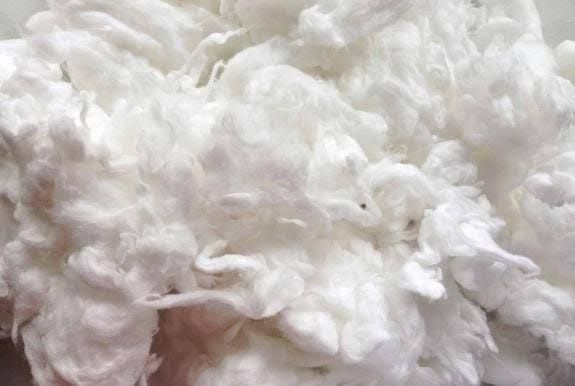

Noils are the short fibres combed out when wool is prepared for worsted spinning. Together with laps and other wool wastes from mills, they're valuable raw material for woollen spinning and blends.

Send us your micron, origin and volume requirements and we'll find the right lot for you.
Make an Enquiry